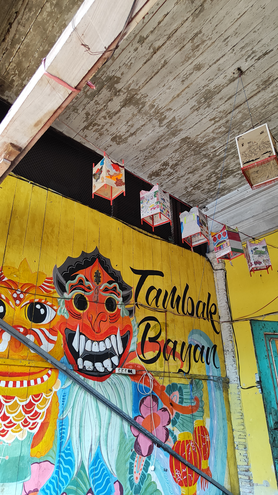
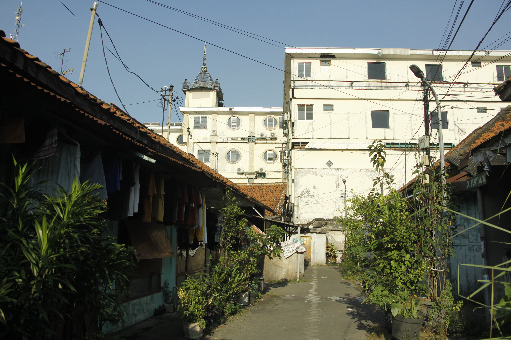

Menghadirkan mural dan kuliner sebagai bagian dari keseharian.

Profil
Kampung Tambak Bayan berada di Kelurahan Alun-Alun Contong, Kecamatan Bubutan, Kota Surabaya, dan telah
dihuni secara turun-temurun sebagai ruang hidup warga. Selain sebagai permukiman, kampung ini dikenal
dengan mural-mural di sepanjang gang serta kuliner rumahan yang tumbuh dari aktivitas warganya.
Kampung Tambak Bayan berada di RW 2 yang terbagi menjadi 7 RT dan merupakan gabungan dari wilayah Tambak
Bayan, Pasar Besar, dan Kepatihan. Saat ini, RW 2 dikelola oleh warga Tambak Bayan dengan jumlah sekitar
600–700 kepala keluarga, yang mayoritas merupakan warga lama.
Dalam kehidupan sehari-hari, warga Kampung Tambak Bayan hidup berdampingan dengan latar belakang yang
beragam. Warga saling mengenal dan menjaga satu sama lain, sehingga suasana kampung tetap terjaga hingga
sekarang.

Sejarah
Kampung Tambak Bayan merupakan kampung pecinan yang telah ada sejak masa kolonial dan tercatat dalam peta
lama. Kawasan ini berkembang sebagai permukiman warga di luar Tembok Belanda dan dihuni secara
turun-temurun.
Sejak awal, Kampung Tambak Bayan menjadi ruang hidup warga dengan beragam mata pencaharian, seperti tukang
kayu, penjahit, pembuat kue, dan pedagang kecil. Kehidupan kampung berjalan lintas generasi dan menjadi
bagian dari sejarah kawasan ini.
Kampung Tambak Bayan juga mengalami berbagai peristiwa sejarah, mulai dari masa kolonial, pendudukan
Jepang, hingga awal kemerdekaan. Cerita tentang bangunan peninggalan Belanda dan bunker yang pernah ada
masih tersimpan dalam ingatan warga generasi lama.
Permasalahan sengketa lahan muncul setelah Hotel Veni Vidi Vici berdiri di kawasan Kampung Pecinan Tambak
Bayan. Wilayah kampung kemudian diklaim dengan dasar Sertifikat Hak Guna Bangunan (SHGB), meskipun warga
telah lama menetap dan rutin membayar Pajak Bumi dan Bangunan (PBB). Sengketa ini menjadi bagian dari
perjalanan Kampung Tambak Bayan hingga saat ini.
Institut Seni Tambak Bayan
Institut Seni Tambak Bayan atau ISTB merupakan komunitas yang tumbuh dari keterlibatan mahasiswa,
akademisi, dan pegiat seni yang sejak lama berproses bersama warga Kampung Tambak Bayan. Hubungan ini
kemudian berkembang menjadi wadah bersama.
ISTB resmi terbentuk pada Juni 2022 atas inisiatif akademisi, alumni, pegiat seni, dan warga. Anggotanya
berasal dari berbagai latar belakang dan bersifat terbuka bagi siapa pun yang peduli terhadap Kampung
Tambak Bayan.
ISTB berperan mendukung kegiatan kampung melalui mural, pengisian acara seperti perayaan Imlek dan
festival lampion, serta pameran karya dan benda-benda lama milik warga yang merekam sejarah kampung.